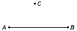

Беседа 3228 от 3877 · Беинса Дуно
Най-добрите условия
Сряда, 5 ч сутринта
„Добрата молитва“
„В начало бе Словото“
В най-важната дума в дадената ви тема има и „вяра“. Откъде е произлязла вярата? Първоначално откъде е произлязла? Как се е домогнал човек до думата „вяра“? Има два вида разбиране. Ние казваме, че човек е невежа и сега се учи. Човек си припомня онова, което е забравил. Да кажем, вие сте минали през известна местност, виждали сте я, но сте я забравили. Като се приближавате, припомняте си и ви се струва, че това нещо сте го виждали. Човек в дадения случай трябва да се учи да не забравя. Погрешката е в това, че човек забравя. Забравя така, както когато е турил нещо на място и го забравил, че не му иде на ума. Някой път турил някой предмет вкъщи, че не може да си спомни къде беше. Случва се с онези, които пушат тютюн с лула, да си тури лулата на ухото и търси лулата къде е. Или някои обичат да си турят писалката на ухото и като пишат, турят я на ухото и забравят, започват да я търсят, карат се кой им взел писалката, а той я носи на ухото си. Сега може да ви се наведат много обяснения.

Имате известен идеал, но къде може да поставите идеала си? Вие имате идеал за доброто, но идеалът какво представя сам по себе си? Доброто какво представя? Доброто не е сладко, нито е горчиво. Доброто не е нито право, нито любещо. Само по себе си какво е доброто? По някой път ние седим и размишляваме какво е доброто. Имаме едно понятие, една идея. Запример един човек, щом вкуси сладкото, има идеал за сладкото. Но ако го заставите да ви обяснява с думи какво е сладкото, без вие да сте имали опит какво е сладкото, никога не може да ви го обясни. Който не е опитал сладкото, не може с думи да му се обясни какво е сладко. Който не е опитал доброто, не може на думи да му се обясни що е доброто. Който не е опитал злото, не може с думи да му се обясни що е злото.
Има хора, които не знаят що е злото. Новородените хора не знаят какво нещо е изгарянето. Майката казва на детето, че ще се опари, но то не знае. Щом се опари, вече знае какво е злото. Втори път вече има известна опитност, че туй, от което майката иска да го предпази, то е опитало. Вие по някой път страдате, защо? Вие философски разсъждавате защо страдате. Страдате като малкото дете: виждате светлината, искате да я хванете, мислите, че можете да я хванете. Но то като се доближи до фитила, тази светлина обича да хапе. Тогава вече детето не бута светлината.
Сега вие по някой път питате защо страдате. Защото вие по някой път като малките деца бутате свещта. Ако не направиш доброто, ти ще страдаш. Значи, ако се откажеш да направиш доброто, ти ще страдаш. Ако не направиш доброто, ти имаш минус. Ако направиш злото, имаш плюс. Ако не го направиш, отказваш се, имаш минус. Ако направиш злото, имаш плюс – ще страдаш. Пък злото, ако се откажеш да го направиш, ще имаш минус – ще се радваш. В първия случай ти се отказваш да направиш доброто и страдаш. Отказваш се да го направиш – значи нищо не си дал и нищо не си спечелил, но страдаш. Във втория случай имаш случай да спечелиш, да направиш злото. Ти се отказваш от тази придобивка, а се радваш. Как ще обясните сега противоречието?
Тия неща ако не знаете да прилагате в живота си, във вашата мисъл, във вашето чувство, във вашето сърце… Само добрите мисли имат отношение към кръвообращението на човека. Добрите чувства имат отношение към кръвообращението А пък добрата човешка мисъл има връзка с електричеството и магнетизма. Значи, ако не мислиш правилно, ще имаш по-малко електричество и магнетизъм и тогава ще имаш един слаб организъм. Ако нямаш добри чувства, кръвообращението няма да става редовно. Тогава ще страдаш от много болести. Ще отслабнеш.
Сегашните хора защо трябва да мислят правилно? Казва: „Може да мисля каквото искам.“ Много неразумно е казано това. Не може да мислиш каквото искаш.
Вземете вие най-веселия човек, заставете го цяла година да ходи и да погребва умрели хора, мъртви кучета, волове, все мъртви същества и след една година вижте какво ще бъде неговото състояние. Или накарайте го цяла година всеки ден да заколва по един вол, или заставете го всеки ден да убива по един човек и вижте за една година какво ще стане с него. Този човек съвсем ще си измени характера. И на вас по някой път ви идат на ум такива мисли, казвате: „Ще го убия!“ Тази мисъл във вас вече ще произведе една промяна, може вие да не сте я забелязали.
Та казвам: При сегашните условия вие търсите само външната страна. Казвате: „Да бъдем добри. Да бъдем справедливи.“ В този свят вие не можете отвън да бъдете добри. Той е в света на доброто – ако не постъпва добре, той е отговорен. Той е в света на правдата – ако не постъпва справедливо, той е отговорен. Той е в света на любовта – ако не люби, той е отговорен. Следователно ти си в света на любовта. Казва: „Да намерим любовта.“ Ти живееш в любовта, как ще я намериш? Любовта никога не се намира. Тя не е нещо външно, за да може да я намериш. Казва: „Да намерим любов.“ Ние говорим едно, разбираме друго. Как ще я намериш? Тя не е круша, не е ябълка, не е някой извор. Казва, че той пил от любовта. Ти от любовта не може да пиеш. Тя не се пие. Казва: „Да живеем с любов.“ Любовта не се живее. Може да живееш с живот. Ако попитате някого какво разбира, като казва „да се живее с любов“… В най-простия смисъл разбираме.
Любовта си има правила. Външни правила си има любовта. Ако вземем майката, не само майката на човека, но и всяка майка в животните, и бащите, обичат своите деца, промислят за своите деца. Вземете птиците: бащата и майката ходят да търсят храна. Има в природата нещо разумно, един закон, който заставя всичките. Когато започне любовта да се проявява, вие ще започнете да извършвате неща, които при друг случай никога няма да ги извършите. Щом пилетата на една кокошка станат големи, тя ги пропъжда вече от себе си. Докато са малки, тя ги вика. Щом станат големи, започне да ги кълве по главата, гони ги, казва: „Да се махате!“ Кой как дойде, тя го клъвне. Докато е малко, ще го повика, ще даде нещо; като стане голямо, ако тръгне с нея, клъвне го. Ако изучавате характера на гълъбите, ще видите, че майката е по-жестока, бащата е по-милостив. Може да направите едно наблюдение. Тя, след като измъти своите гълъбчета, след като ги отхрани – понеже много се размножават – като снесе яйцата, гони гълъбчетата, вече не ги пуща в полога, гони ги, хапе ги. Бащата се занимава с тях, храни ги, майката ни най-малко не ги пуща. Бащата е много снизходителен.
Вие казвате: „Това са птици.“ Сега искам по аналогия да ви наведа на мисълта. Имаме известни правила да мислим. Как трябва да мислим, вие сте забравили. Вземете някой човек, напийте го с някое напивателно питие. Той забравя да мисли, стане разпасан, из неговия ум, из неговия мозък започнат да излизат необмислени думи. Докато е трезв, избира думите; като стане пиян, не мисли, каквото му дойде на устата говори. Някой път вие сте забравили, не може да мислите. Защо? Влязло е едно посторонно вещество във вашия мозък, не може да мислите.
Та казвам: Лошите мисли, лошите желания, лошите постъпки убиват човека. Човек се убива с тях. Мислите ли, че лошите хора мислят много хубаво? Заблуждавате се вие. Вълкът е много умен, само как да открадне някъде. Вълците имат ли някаква култура? Колко вълци има, които са написали някоя хубава книга? Колко лисици има, които са знаменити поети или музиканти? Колко големи змии има, които са създали някакви църкви в света?
Сега съществува една идея, казвате: „То с добро в света не става, но със зло.“ То е друг въпрос. В света и само с добро не става, защото злото в света е сила, пък доброто е умение. Следователно тази сила на злото само с доброто може разумно да се използува. Туй е сега разбиране. Казва: „Човек трябва да има повече енергия.“ Когато собата е нагорещена и изгори ръката на детето, тя е зла, лоша соба. Някой път е едва стоплена, детето може да тури ръката на собата – значи не е толкоз зла.
Следователно един лош човек е като една нагорещена соба, някой път на 100, 200, 300, 400, 500 градуса, пък ние едва имаме нужда от колко градуса? В човешкия организъм 37 градуса е нормалната топлина, при която човек може да живее. Щом има 41 градус, то е неестествено положение. И аз по някой път се чудя защо човек при 41 градус топлина умира. Може да обясним по същия начин: ако прекараме 2000 волта електричество през човешкото тяло, човек умира. Ако прекараме 50, 60, 70, 100 000 волта, не го убиват. И тогава физиците дават обяснение, че при двете хиляди волта частиците, които вървят в тази течност (защото електричеството е една течност), са толкоз едри, че като минават през порите, разпокъсват организма и следствие на това човек умира. При 50–100 000 волта частиците са толкоз дребни, че минават през организма и го пречистват.
Така може да се обясни, че при 40 градуса топлина теченията, които стават в човешкото тяло, са едри и разкъсват организма, кръвта се съсирва, не може да функционира правилно, следствие на това човек умира. Но един трезв човек, който има трезви чувства и трезви мисли, при 41 градус не умира и при 42 градуса не умира, и при 45 градуса не умира. Има хора, които умират при 41 градус. Обикновените хора умират, но има хора, които при 42 градуса топлина не умират. Той се справя с тази топлина. Тази топлина той я изменя в себе си. Този човек може да измени своята топлина. Сега вие може да направите опит да повишите или да понижите температурата си. Аз мога на когото и да е от вас да повиша температурата му или да я понижа. Да допуснем, че вие седите и имате една нормална топлина. Кажа ви: Банка „Гирдап“ фалирала. Вие имате 200 000 в банка „Гирдап“. Тези думи: „Банка „Гирдап“ пропаднала“, какво ще произведат във вас? Каква ще бъде температурата? Веднага сърцето ви ще започне да тупа. Температурата в главата ви, в мозъка, който много мъчно се стопля, веднага ще почувствуваш едно стопляне в мозъка, завие ти се свят. Температура имаш в мозъка. Хубаво, колко пъти могат да кажат, че банка „Гирдап“ фалирала, пък тя никак не е пропаднала. Четеш във вестника, завърти ти се мозъкът. На другия ден четеш: банка „Гирдап“ не е пропаднала.
При сегашните условия вие всеки ден се смущавате за банка „Гирдап“. Коя е вашата банка „Гирдап“? Как ще живеете за бъдеще, кой ще ви зарови, къде ще идете в оня свят. Тоя свят и оня свят, той е един и същ свят. Нищо повече. Когато един българин го вземат от село, че го направят министър в София, той напуща света на селото, но той извън България ли отива? Той остава в България, качи се на някой висок пост. Казваш, че министър ще станеш. Може и извън България министър да станеш. Има случаи, дето може да стане министър извън България. Може да стане министър във Франция. Един българин може да стане министър във Франция, но трябва да бъде французки министър. Може да бъде български посланик във Франция.
Често вие мислите, че като умрете, ще идете някъде. Като умрете, никъде няма да идете, ще останеш пак в България. Но твоето състояние като министър ще се измени. Че, един земледелец, който се занимавал със земледелие, като напусне селото, ще се измени неговият живот, няма да има рало, мотика. Като дойде в града, съвършено ще се измени неговият живот. Туй изменение разбираме оня свят, нов свят. Новият свят с новите условия, новите хора, новия строеж, който ще дойде. То е новият свят, не е мястото.
Та казвам: Когато минат хората от този свят в другия свят, ще се измени тяхното състояние. Вие като ученици трябва да имате нови възрения. Че човек умрял, не трябва да очаквате, че чрез смъртта човек ще влезе в оня свят. Но без да [умира] да влезе. Защото ние и без да умираме може да влезем в другия свят. Илия умря ли – но с колесница дойдоха и го взеха, отиде в другия свят. Енох, толкоз добър човек, че и той без да умира, и той отишъл в другия свят. Понеже всички хора не са достойни, затова не може да идат. Може да има и други хора, които да са заминали, но само двама има в историята, които без умиране можаха да отидат в другия свят. То е вече специално разрешение. Тези, които държат управлението на Земята, сега не може да изнесеш злато от една държава със себе си, докато не ти дадат разрешение. И като идеш за другия свят, не дават нищо от този свят. Ако имаш в тукашните банки, ни пет пари не може да занесеш, ни една стотинка. Затова Христос, като знаеше този закон, казва: „Още като сте тук, събирайте съкровища за горе, понеже нищо няма да ви дадат от събраното на Земята да го занесете горе. Че, като идете там, да имате съкровище.“ В този свят имате пари, вложени в банките, но в оня свят какво сте вложили? Имате ли банкови книжа? Всеки трябва да има банкови книжа.
За оня свят, за който говоря, в него живеят разумни същества, подобни на хората. Като нас в оня свят не може да видите. Вие между ангелите не може да идете. Може да идете, но нито един ангел няма да се спре да ви говори. Най-първо, някой от вас знаете ли ангелския език? Понеже, ако идете между ангелите и те не ви обичат, те няма да ви обърнат внимание на вас. И в този свят, в който живеете, вие обръщате внимание на всички, които ви обичат, които имат любов към вас. Вие обичате някой плод, защото той ви обича, има какво да ядете от него, затова го обичате. Ония неща, които не ви обичат, нищо не са приготвили заради вас, не ги обичате. Казвате: „Обичам крушата“, защото крушата ви обича. Обичате водата, защото водата ви обича. Обичате Слънцето, защото Слънцето ви обича. Всички неща, които ви обичат, и вие ги обичате; които не ви обичат, и вие не ги обичате. По някой път мислите, че като обичате ябълката, вие ѝ давате нещо. Ябълките имат нещо заради вас, те са жертва за вас. Те дават нещо от своята любов. Те влизат във вашия свят. Имат желание, обичат ви те. Те, за да влязат в нашия свят, се жертвуват, умират. Като влязат в чистилището на вашия живот, в митницата, влизат в стомаха. След [това], каквото са донесли оттам, вие давате разрешение, влиза в дробовете, в мозъка, в разните центрове, започват да изследват човешкия живот. Но казвам: По този начин се създава едно разумно понятие. Ние мислим, че ябълката не е разумна. То са наши схващания. Не мислете, че ябълките не са разумни. Не са разумни, понеже нямаме любов към тях. Всяко нещо, което обичаме, е разумно. Всички неща, които обичаме, са разумни. Всичко онова, което не обичаме, заради нас не е разумно.
И тъй, в живота вие не може да имате една наука, ако нямате любов към този предмет, който изучавате. Ако аз говоря върху някой друг въпрос, за други работи може да говоря, които ви интересуват, за пари може да говоря, всички щяхте да ме слушате. Я да кажа: „На еди-кое си място има заровено злато, гърнета, пълни със злато“ – всички щяхте да ме слушате. Като излезете оттук, половината от вас с мотики ще тръгнат, други – с тесли, да търсят парите. Ако ви кажа, че златото е заровено на половин метър, даже и най-слабите от вас, които не могат да ходят по екскурзии, ще идат и на 4–5 километра.
Преди години отива в село Николаевка един Нойчо, знаменитият Варненски Нойчо отива в селото и разправя, че на еди-кое си място знае заровено богатство. Всички селяни, със свещеника заедно, се подигат и тръгват да търсят. Нойчо като седял, казва: „Да ида и аз, може да намерят нещо.“ Та, и той тръгва. По някой път и ние, като мислим за някоя илюзия, сами се убеждаваме. Такава илюзия имате за лотарийните билети. Казват: „Вашето щастие се крие в лотарийните билети, ще ви се падне един милион, 500 000, 100 000.“ Убедиш се, че може да ти се падне. Така ти говорят. Тук преди 4 месеца дошъл един учител и ми казва: „Четири години вземам все цели билети, похарчил съм 4–5000 лева.“ Казвам: „Колко си спечелил?“ – „500–600 лева.“ Ако беше турил парите за билетите в банката, сега щеше да има спестени 5000 лева. Защо купувате билети за лотария? Като ти дойде на ум да си вземеш билет от лотарията, тури го в спестовната книжка. Сигурно ще спечелите. Всякога ще спечелите. С този билет сто на сто ще спечелите. След 4–5 години ще имаш доста спестени пари.
Сега, законът действува. Имаш една мисъл. Приложете я. За да направиш едно добро, колко пъти трябва да повтаряш? Силният човек веднага, като каже, направя го, но слабият не може. Сега, доброто аз го изяснявам тъй. Аз правя добро с един лев. Правя добро с два лева, правя добро с три лева, с 4, с 5, 10, 15, 20, 40, 1000, 2000, 10 000, 20 000. Туй е реалното добро. С един лев добро всеки може да го направи. Но колко души от вас могат да направят добро с 10 000 лева? Сега вие и да искате, не можете, защото нямате толкоз спестени пари. Невъзможно е. Нали казвате, че всичко в живота е възможно. Представете си, че вие сте в едно планинско място, не сте много учен човек, но някоя река някъде ще отбиете и вие може тази река да я пуснете и да поливате градини на 20 души. Значи вие може да отбиете тази вода, да им направите услуга.
Парите в света са като водата. Вие сте хванали много малка струя, само няколко капки. Хванете някой извор, парите ще потекат. Аз съм ви говорил и по-рано: помислиш за пари, бръкнеш в джоба, има пари. Похарчиш ги, пак помислиш, пак бръкнеш, пак има пари в джоба. Откъде идат? Течение има. Сега, ако аз ви докажа как става тази работа, вие никога вече опита не може да направите. Ще се зароди мисълта: „Защо да не може да го направим?“ Не може да го направите, защото, ако ви кажа как става работата, нещата не се повтарят. Туй, което аз може да направя, вие не може да направите. Туй, което вие може да направите, друг не може да го направи. Англичаните казват тъй: „Каквото хората могат да направят, и аз мога да го направя.“ Отчасти е вярно това. Някой е поет, написал нещо; друг е музикант, написал нещо; някой архитект съградил нещо – това не всеки може да го направи. Може да го направи, но трябва да се подготви. В дадения случай ти не може да направиш това, което хората могат да направят. Каквото хората правят, ние не може да го направим, ние може да се ползуваме от техния труд.
Та казвам: По някой път хората мислят, че те нямат нужда от никого. Те мислят, че могат да бъдат самостоятелни. Казва: „Аз съм самостоятелен човек.“ То е едно заблуждение. Как си самостоятелен? Ти не си самостоятелен, понеже въздуха го вземаш даром. Ти не си самостоятелен, понеже светлината я вземаш даром. Ти не я произвеждаш. Храната ти не я произвеждаш, даром я вземаш. Значи ти си зависим. После вие казвате: „Аз ходя накъдето искам.“ Не може да ходиш където искаш.
Ние имаме такива възгледи за живота, че сами се заблуждаваме. Казва: „Аз съм свободен човек.“ За да бъдем свободни, най-първо трябва да се научим добре да мислим. Преди години иде при мене един селянин и казва, че волът му бил болен. Казвам му: „Пусни го в гората.“ Казва: „Ще го изядат вълците.“ Казвам: „Болен вол вълци не го ядат. Щом затлъстее, ще го изядат.“ Казва: „Може да умре.“ Казвам: „По-добре в гората да умре, отколкото в дома.“ Казва: „Като умре, кожата ми трябва.“ Той не мисли за вола, мисли за кожата. Като ме пита за болния си вол, не че има някакво чувство морално, че той мисли за вола, но мисли волът му да е здрав, да му оре. Казва: „Скоро ли ще оздравее?“ Аз го питам защо пита скоро ли ще оздравее. Защото няма кой да му оре нивите.
Та, по някой път и вие се питате кога ще се оправят вашите работи. Сега вашите работи не са ли оправени? По-оправен живот от вашия няма. Работите ви са толкоз оправени, само вие сте пратени да се учите. Вие седите и мислите, вие оправяте вашите работи. Всички трябва да вярвате, че вашите работи са оправени и трябва да учите. После, вие не искате да страдате, а пък страданията са хубави. Те са аперитив. Без страдания животът няма смисъл. Страданието в природата е необходимо. Когато си мек, ще те турят в страдание, да станеш твърд. Ако си много твърд, страданията ще те омекчат. Страданията са един процес да станете или меки, или твърди, или скрити, или откровени.
Някой път човек е много затворен. Знаеш колко мъчно е, когато някое дете направило една погрешка, да го накараш да каже истината? Колко пъти трябва да го бият, докато каже истината. След като го набият, това дете казва къде е ходило, в коя градина брало ябълки. То скрива. Казвам: Натурата му е такава. От скритността на хората какво излиза? Има някои неща, които трябва да ги държим скрити; има други неща, които трябва да бъдат отворени. Сега туй дете е отишло да върши престъпление по единствената причина, че в него има желание или да яде, или да вземе нещо отнякъде. То има чувство и това чувство го заставя. От него се заражда алчността. Иска човек да има много ниви, говеда, волове. Хубави са тия чувства, те са на място. Ако човек няма туй чувство, той няма желание да учи. Заради това чувство на стяженолюбие иска да има знания. Най-първо изучава буквите да ги съединява, да говори. Иска очите му да бъдат богати. Не е лошо човек да бъде богат. Да бъдеш богат, да имаш в речника 4–5000 думи да говориш е хубаво. Сега имаш един беден речник, какво може да изразиш?
Вие сте дошли вече до положението ония дарби, които имате, трябва да се изявят. Сега много сестри ми казват: „Ние остаряхме, като дойдем втори път на Земята…“ Най-първо, вие не знаете как ще дойдете. Вие не слушайте тия теории, които казват: Един учител, който е напреднал, има право след 2000 години като посети Земята, пак да дойде. Значи, ако един учител ви каже: втори път като дойде на Земята, значи вие трябва да чакате 2000 години. Какво търпение трябва да имате. Хубаво, той дойде след 2000 години, ти изгубиш условията. Често вие изгубвате добрите условия, които преди 2000 години сте имали. Има нещо, което през 2000 години става. То не става всеки ден.
Знаете ли как иде любовта? Какъв е периодът на любовта? Разните видове любов имат свои периоди. Те са тъй, както обикалянето на планетите около Слънцето. Всяка планета има влияние върху Земята. Има добри влияния, когато е близо; има лоши влияния, когато е далече. Някой път има лоши влияния, когато е близо и има добри влияния, когато е далече. Представете си, че Юпитер е най-близо до Земята. Какво влияние ще има върху хората? Хората ще искат да бъдат чрезмерно благородни. Когато Юпитер е далече, тия чувства са по-слаби. Когато Сатурн се намира най-далече от Земята, тогава хората ще бъдат по-малко подозрителни. Ако Сатурн е най-близо до Земята, тогава ще бъдат чрезмерно критични, подозрителни, песимистично ще гледат на нещата.
Сега може да се зададе въпросът: Защо нещата са така направени? Представете си, че собата е нагорещена 1000 градуса. Ако сте много близо до тази соба, какво влияние ще има върху вас топлината? Ако сте много близо, тази топлина ще бъде непоносима за вас. То ще бъде едно дисхармонично състояние. Ако сте много далеч от нея, пак ще има друга дисхармония. В първия случай вие ще бъдете подложени на изгаряне, разтопяване; във втория случай, ако сте далеч, може да замръзнете, да се вцепените.
Следователно в природата противоречията, които съществуват, човек е така поставен със законите на живота, в една такава орбита, дето всичко да му въздействува за добро. По някой път вие се обезсърчавате, казвате, че сте остарели. Казвате: „Да идем в оня свят.“ Другият свят вече подразбира нови условия, при които ще дойдете. Да кажем, едно дете за първата година умира, значи разширява се. За втората година пак умира, влиза в третата година. За третата година умира, влиза в четвъртата. „Умиране“ значи влизане в един по-широк кръг. Разширява се кръгът, предметите стават повече. Но тия предмети, които се размножават във вашия ум, те ще ви ангажират повече. Най-първо, като дете, вие се занимавате с няколко мисли. Като възрастни се занимавате с много работи, които са непотребни. Започват да ви безпокоят. Едно дете най-първо не се обижда, не знае какво нещо е обидата. Вие, които сте прекарали 20 години в живота, знаете какво нещо е обидата. Едно дете, което се ражда, не знае какво нещо е обидата. То не разбира, че зле са го погледнали. Един човек, който живял 20–30 години, знае какво е един лош поглед. Да ви погледне един човек накриво, това не е нещо илюзия, но чрез този поглед той изпраща известна енергия, която зле действува на вашата нервна система. Вие казвате, че няма нищо, когато един човек ви мрази. Като ви мрази един човек, цяла една огнена струя изпраща. Ако нямате здрава нервна система, може много нещо да ви сполети. Някои хора обичат да кълнат. Стават тия работи. И думите стават. И думите са като някои хора, които стрелят. Някоя дума може да улучи.
Преди години бях в Търново. Един отива да се прегледа на един лекар, нещо имал. Заболял той от неврастения. Лекарят му казва: „Болестта е страшна, но добре че сте дошли при мене.“ Той искал да усили болестта и му казал, че благодарение, че е дошъл при него, не е така опасно. Но онзи, като чул, че болестта е страшна, тия думи останали само в главата му и забравил другите думи на лекаря: благодарение, че е отишъл при него. Той иде при мене и ми казва: „Лекарят ми каза, че болестта е страшна.“ Казвам му: „Ти нямаш никаква болест. Тя, болестта си е заминала. Тя е от едногодишните болести, не е от двугодишните. Една година измина откак си е заминала. Нямаш никаква болест. Заминала си е“, рекох. Окуражи се човекът. Пита го лекарят как е оздравял. „Казаха ми, че заминала болестта.“ – „Как заминала?“ – „Каза ми човекът, че е заминала. Аз му повярвах и няма я вече. Ти ми каза, че болестта е страшна и аз повярвах, онзи ми каза, че болестта е заминала и аз повярвах. В единия случай се разболях, в другия случай оздравях.“
Ние всеки ден сме подложени на внушение. Вие четете сега вестниците и вярвате. Но 99 на сто каквото пишат вестниците, не е вярно. Ако времето се заоблачи, хората ги е страх; ако духне вятър, страх ги е. Гледам как хората си самовнушават. Някой път някое малко отвърстие има, хората ги е страх от течение, да не се простудят. Щом седиш при един прозорец и мислиш, няма да се простудиш. Вие знаете, в 66 (в къщата на ул. „Опълченска“ № 66 (в София), където Учителят е живял), бях на прозореца зимно време и като седях, казвах, че няма да се простудя. Ако се плашех, че ще се простудя, досега всичките болести щяха да дойдат. Вярвайте в едно: Вие всички имате един вътрешен имунитет. Вие сте поставени при най-добрите условия за саморазвитие.
Аз не ви препоръчвам да мислите на колко години сте. Казвате: „На 45 години.“ 45 години какво означават? Ако си на 45 години и идеш на Юпитер, 12 години взема на Юпитер, докато обиколи около Слънцето – ти на Юпитер едва ще бъдеш на 3 години и половина. Ако идеш на Слънцето да живееш, като си на 45 години, те няма да съставят една минута. Ти ще бъдеш в живота едно детенце на една минута. Всяка година е важна какво си придобил ти от годината. То е годината. Като си на 45 години, какво си придобил. Ако си се учил да свириш и за 45 години си се научил да свириш, че да възкресяваш хората, научил си се. Ако 45 години си се учил да говориш и си станал красноречив, че като кажеш нещо, дето влезеш, всичките страдания си отиват, ти си се научил. Ти си на 45 години и казваш: „Много пострадахме.“ Аз не искам да говоря за страданията. Много сме пострадали, значи не сме изпълнили Божия закон. В изпълнението на Божия закон е смисълът на човешкия живот. А в неизпълнението на Божия закон е смисълът на всичките страдания на живота.
Казвам: Страданията в живота – и личните, и всичките, ще изчезнат, като се научим да изпълняваме Волята Божия. Всичките противоречия ще изчезнат тогава, ще останат само ония противоречия, които са естествени, ще остане налягането вътре във вас, за да можете в живота си да прогресирате. Ако нямате никакви противоречия, вие имате съвсем други разбирания. Ако нямате противоречия, ще влезете в противоречията на другите, да може да ги ползувате. Един здрав човек може да помогне на един болен човек. На този болния човек му липсва жизнена енергия. Този здравият човек може да му даде енергия. Особен начин има, може да се вземе енергия от един здрав човек и да се прелее енергия. Сега няма да ви разправям какви са начините, но аз съм направил само един такъв опит. Викаха ме в Сливен, една стара госпожа, много благородна, изтощила нервната си система. Гледам, имаше един зет, който казваше, че много обича баба си. Казвам им: „Аз може да ви помогна.“ – „Че как, дайте ми съвет.“ Казвам му: „Ти си здравеняк, готов ли си да дадеш нещо от себе си и след 4–5 деня баба ти ще бъде здрава?“ – „Готов съм.“ Казвам: „Дай си ръката на бабата.“ Така постояха и после казвам: „Остави баба си.“ След 4–5 деня бабата стана, разхожда се. Но зет ѝ казва: „Не зная какво ми е, има нещо.“ Бабата казва: „Бог здраве да дава на моя зет.“ Рекох: „Аз може от вашия материал да ви помогна, но вие искате аз да дам. Аз не давам.“
Казвам: В доброто всички трябва да живеем добре, за да може естествените сили, които Бог е вложил във всичките хора, да се проявяват по един естествен начин. В добрия живот тази физиология върви по един естествен начин, преливането става естествено. Ако едно общество, един народ или цялото човечество живеят в този закон, хората ще бъдат здрави, много малко болести ще има. И страданията ще бъдат малки. Понеже няма връзка между хората, страданията са големи. Казвам: Живейте добре, за да бъдете във връзка с всички добри хора, със здравите хора. Мислете добре, чувствувайте добре и постъпвайте добре, за да бъдете във връзка с добрите хора по цялото земно кълбо. Когато вие сте във връзка с тях, тогава Божието благословение ще бъде с вас. То е един закон.
Сега, приложението на закона. Като обичаме Бога, като обичаме ближните си, понеже Бог пребъдва във всичките хора, тогава Неговата сила ще ни помага чрез когото и да е.
„Отче наш“
XIX година (1939–1940)
40-а лекция на Общия окултен клас,
държана от Учителя на 3 юли 1940 г.,
София – Изгрев.